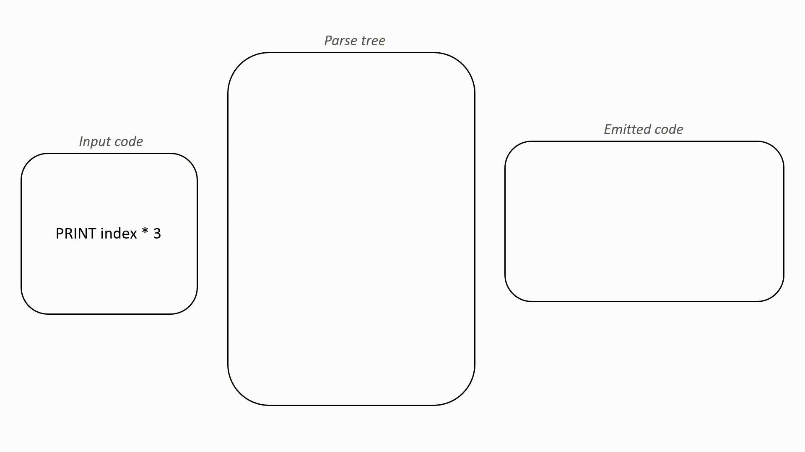
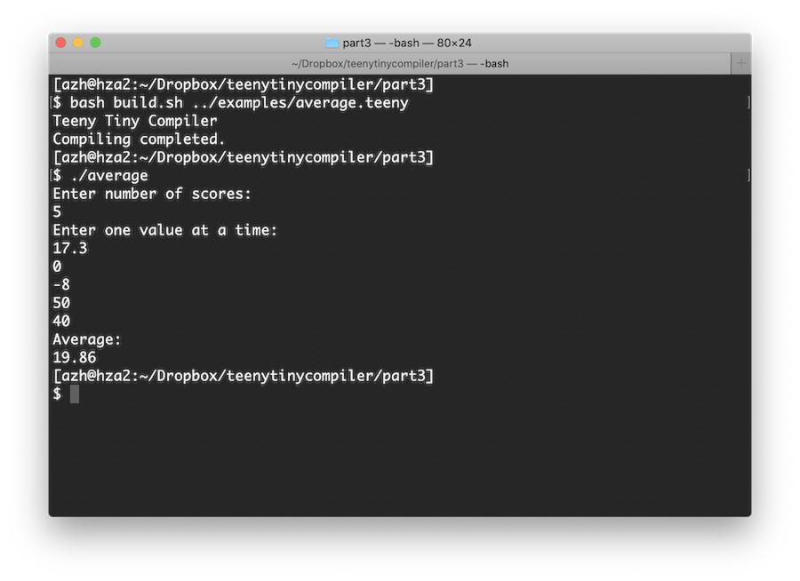

I work on AI + developer tools.
We are finally here. It is time to create the emitter for our Teeny Tiny compiler, which will give us the foundation to a working compiler. The fame and fortune is so close! Previously, we implemented the lexer (part 1) and the parser (part 2). The source code from this tutorial can be found in the GitHub repo.
The emitter is the component that will produce the compiled code. In this case, our compiler will be producing C code. Luckily, we designed our parser in such a way that will make emitting C code quite easy! Since C is so ubiquitous, we will rely on your favorite C compiler (e.g., GCC or Clang) to produce the executable for us. This means our compiler will be platform independent without dealing with assembly code or complex compiler frameworks.
Back before I started coding this compiler, I wrote several fictitious examples of Teeny Tiny code and the corresponding C code that I think the compiler should generate. This was a good exercise to see which things translate nicely (i.e., one line of Teeny Tiny equals one line of C) and what doesn't.
Let's take a look at an example of Teeny Tiny code and the equivalent C code that we would like for our compiler to emit. The example is a program that calculates nums values of the Fibonacci sequence.
PRINT "How many fibonacci numbers do you want?"
INPUT nums
PRINT ""
LET a = 0
LET b = 1
WHILE nums > 0 REPEAT
PRINT a
LET c = a + b
LET a = b
LET b = c
LET nums = nums - 1
ENDWHILE
#include <stdio.h>
int main(void){
float nums, a, b, c;
printf("How many fibonacci numbers do you want?\n");
scanf("%f", &nums);
printf("\n");
a = 0;
b = 1;
while(nums>0){
printf("%.2f\n", (float)(a));
c = a+b;
a = b;
b = c;
nums = nums-1;
}
return 0;
}
The above code almost translates line by line. Like PRINT turns into printf, INPUT to scanf, etc. You'll also notice there are other differences. The C code has a main function, includes a library, and returns 0 at the end. You'll also see that the C code has different syntax for variable declarations versus variable assignments (unlike our LET statement syntax which combines declarations and assignments) and that they are all declared at the top (this is an old C convention). It is these differences that our compiler needs to know about so that they can be handled accordingly. There are a few more that will come up later, but never fear, we can address them!
So how does this emitter work??? In each function of the parser, we will call the emitter to produce the appropriate C code. The emitter is effectively just appending a bunch of strings together while following along the parse tree. For each grammar rule of Teeny Tiny, we will figure out how it should map to C code.
Below is an illustration of compiling a single line of Teeny Tiny code. It shows each step of how the lexer, parser, and emitter work together. The left shows the input code with the relevant token highlighted, the center shows the parse tree with the current element highlighted, and the right side shows the emitted code with the newly appended text highlighted.
Try watching the animation a few times. The emitter is utilizing the parse tree to emit the C code in fragments. This will all make more sense when we get to the code.
First, we will update main in teenytiny.py to use the emitter that we will soon build:
from lex import *
from emit import *
from parse import *
import sys
def main():
print("Teeny Tiny Compiler")
if len(sys.argv) != 2:
sys.exit("Error: Compiler needs source file as argument.")
with open(sys.argv[1], 'r') as inputFile:
source = inputFile.read()
# Initialize the lexer, emitter, and parser.
lexer = Lexer(source)
emitter = Emitter("out.c")
parser = Parser(lexer, emitter)
parser.program() # Start the parser.
emitter.writeFile() # Write the output to file.
print("Compiling completed.")
main()
The compiler still expects a filename as a command line argument to open for input. But now the parser object will control the lexer and the emitter. So next, we have to go on and implement the emitter. Create emit.py with the following code:
# Emitter object keeps track of the generated code and outputs it.
class Emitter:
def __init__(self, fullPath):
self.fullPath = fullPath
self.header = ""
self.code = ""
def emit(self, code):
self.code += code
def emitLine(self, code):
self.code += code + '\n'
def headerLine(self, code):
self.header += code + '\n'
def writeFile(self):
with open(self.fullPath, 'w') as outputFile:
outputFile.write(self.header + self.code)
That is the entirety of the emitter's code! It is simply a helper class for appending strings together. code is the string containing the C code that is emitted, header contains things that we will prepend to the code later on, and fullPath is the path to write the file containing C code. We use emit to add a fragment of C code and emitLine to add a fragment that ends a line. headerLine is for adding a line of C code to the top of the C code file, such as including a library header, the main function, and variable declarations. Lastly, writeFile writes the C code to a file.
We then have to make a small change to the parser's __init__ in parse.py to use the emitter:
def __init__(self, lexer, emitter):
self.lexer = lexer
self.emitter = emitter
self.symbols = set() # All variables we have declared so far.
self.labelsDeclared = set() # Keep track of all labels declared
self.labelsGotoed = set() # All labels goto'ed, so we know if they exist or not.
self.curToken = None
self.peekToken = None
self.nextToken()
self.nextToken() # Call this twice to initialize current and peek.
That really is all the emitter entails. Now we just have to call it with the appropriate C code from the parser.
We will now be modifying the existing functions in parse.py. We will be calling the emitter functions from inside the parser (and removing the print statements that we used for testing in part 2).
Going through the functions in order, let's look at program. To translate an empty Teeny Tiny program, we need some boilerplate C code. Really, we only need a main function but we will go ahead and include stdio.h so that printf and scanf are available. Update program with:
# program ::= {statement}
def program(self):
self.emitter.headerLine("#include <stdio.h>")
self.emitter.headerLine("int main(void){")
# Since some newlines are required in our grammar, need to skip the excess.
while self.checkToken(TokenType.NEWLINE):
self.nextToken()
# Parse all the statements in the program.
while not self.checkToken(TokenType.EOF):
self.statement()
# Wrap things up.
self.emitter.emitLine("return 0;")
self.emitter.emitLine("}")
# Check that each label referenced in a GOTO is declared.
for label in self.labelsGotoed:
if label not in self.labelsDeclared:
self.abort("Attempting to GOTO to undeclared label: " + label)
The additions here are starting out with the include statement and the main function. Then we loop through all of the self.statement(). At the end, we have to close up the main function with return 0; and a closing curly bracket.
We will continue to use the emitter just like so. Emit some initial code, call other parser functions based on the grammar, and emit more code before returning up the call stack.
Let's test our emitter thus far. Assuming your hello.teeny with the Fibonacci code example still exists from last time, run python3 teenytiny.py hello.teeny. If things go as planned, the last line in the terminal should be "Compiling completed." and out.c should have been created. Check the contents of the emitted code and you should see:
#include <stdio.h>
int main(void){
return 0;
}
OUR COMPILER JUST COMPILED SOMETHING!
That is right, our Teeny Tiny compiler can now emit a working C program. (Ignore the lack of code formatting...) If you are on Mac or Linux then you can run clang out.c or gcc out.c to create an executable, and then ./a.out to run the program. It won't output anything just yet. Soon though. Very soon. If you don't have access to a C compiler, you can use Repl.it to run C code in the browser.
Next we will update PRINT inside the statement function of parse.py. Recall that there are two cases for the print statement: printing a string and printing the result of an expression. Here is the code:
# "PRINT" (expression | string)
if self.checkToken(TokenType.PRINT):
self.nextToken()
if self.checkToken(TokenType.STRING):
# Simple string, so print it.
self.emitter.emitLine("printf(\"" + self.curToken.text + "\\n\");")
self.nextToken()
else:
# Expect an expression and print the result as a float.
self.emitter.emit("printf(\"%" + ".2f\\n\", (float)(")
self.expression()
self.emitter.emitLine("));")
Look at how we are emitting fragments of C code. Hopefully this is starting to make more sense.
Run your compiler with hello.teeny again and check out.c:
#include <stdio.h>
int main(void){
printf("How many fibonacci numbers do you want?\n");
printf("\n");
printf("%.2f\n", (float)());
return 0;
}
This is fantastic. Teeny Tiny now emits code for printing strings. Run this with your favorite C compiler and it will work. One thing to note is that the third printf isn't doing anything. This is because expression isn't emitting anything yet. Eventually this will produce a number.
Continuing through the parser, let's replace the code for IF and WHILE statements. They look almost identical:
# "IF" comparison "THEN" block "ENDIF"
elif self.checkToken(TokenType.IF):
self.nextToken()
self.emitter.emit("if(")
self.comparison()
self.match(TokenType.THEN)
self.nl()
self.emitter.emitLine("){")
# Zero or more statements in the body.
while not self.checkToken(TokenType.ENDIF):
self.statement()
self.match(TokenType.ENDIF)
self.emitter.emitLine("}")
# "WHILE" comparison "REPEAT" block "ENDWHILE"
elif self.checkToken(TokenType.WHILE):
self.nextToken()
self.emitter.emit("while(")
self.comparison()
self.match(TokenType.REPEAT)
self.nl()
self.emitter.emitLine("){")
# Zero or more statements in the loop body.
while not self.checkToken(TokenType.ENDWHILE):
self.statement()
self.match(TokenType.ENDWHILE)
self.emitter.emitLine("}")
If you test this code with the Fibonacci example, you'll find something very broken. The C code contains while(){. Uhoh. This is the same problem as before, nothing is being emitted by functions like expression and comparison. But the rest of the loop looks correct.
The LABEL and GOTO code is fairly straightforward:
# "LABEL" ident
elif self.checkToken(TokenType.LABEL):
self.nextToken()
# Make sure this label doesn't already exist.
if self.curToken.text in self.labelsDeclared:
self.abort("Label already exists: " + self.curToken.text)
self.labelsDeclared.add(self.curToken.text)
self.emitter.emitLine(self.curToken.text + ":")
self.match(TokenType.IDENT)
# "GOTO" ident
elif self.checkToken(TokenType.GOTO):
self.nextToken()
self.labelsGotoed.add(self.curToken.text)
self.emitter.emitLine("goto " + self.curToken.text + ";")
self.match(TokenType.IDENT)
We will skip testing everything for a moment to get to something more interesting.
The LET code is a bit different. It will sometimes call emitter.headerLine. Why? Because the first time a variable is referenced in Teeny Tiny it should emit a variable declaration in C, and place it at the top of the main function (this is an old C convention). As I alluded to earlier, this is one of the major differences in syntax between Teeny Tiny and C, so our compiler has to do a little more work to translate. Teeny Tiny doesn't differentiate between variable declarations and assignments, but C does. Here is the code:
# "LET" ident = expression
elif self.checkToken(TokenType.LET):
self.nextToken()
# Check if ident exists in symbol table. If not, declare it.
if self.curToken.text not in self.symbols:
self.symbols.add(self.curToken.text)
self.emitter.headerLine("float " + self.curToken.text + ";")
self.emitter.emit(self.curToken.text + " = ")
self.match(TokenType.IDENT)
self.match(TokenType.EQ)
self.expression()
self.emitter.emitLine(";")
Ok ok, compile hello.teeny and inspect out.c...
#include <stdio.h>
int main(void){
float a;
float b;
float c;
printf("How many fibonacci numbers do you want?\n");
printf("\n");
a = ;
b = ;
while(){
printf("%.2f\n", (float)());
c = ;
a = ;
b = ;
nums = ;
}
return 0;
}
The code definitely isn't error free, plus things are a bit hard to read without formatting. You'll see that the variable declarations are all at the top though! That is exciting. So what isn't working? Well a = ; certainly isn't valid C code. Looks like all the variable assignments are broken. In fact, anything that calls expression is emitting invalid code (still). We are making significant progress though!
Alright, we have one more type of statement to support: INPUT. There are a few things to note about this. First, if the variable being referenced doesn't already exist, then we should declare it by using emitter.headerLine. Second, we have to include some C specific code because of how scanf works. We could just emit scanf("%f", &foo);, but that won't handle invalid input, such as when a user enters a letter. So we must also check if scanf returns 0. If it does, we clear the input buffer and we set the input variable to 0.
Note: This will be a limitation of Teeny Tiny. You can't tell if the user input was the value 0 or an invalid input. They are treated the same. There are ways to fix this though. You could modify it such that an invalid input results in an obscure value, like -999, or prints an error message and asks for a valid input in a loop, or sets an error code in a flag. Every programming language handles these types of scenarios differently. The value of 0 will work for now though.
Let's venture forth with the code. It looks a bit ugly, but it is really just some boilerplate for handling invalid input. Here it is:
# "INPUT" ident
elif self.checkToken(TokenType.INPUT):
self.nextToken()
# If variable doesn't already exist, declare it.
if self.curToken.text not in self.symbols:
self.symbols.add(self.curToken.text)
self.emitter.headerLine("float " + self.curToken.text + ";")
# Emit scanf but also validate the input. If invalid, set the variable to 0 and clear the input.
self.emitter.emitLine("if(0 == scanf(\"%" + "f\", &" + self.curToken.text + ")) {")
self.emitter.emitLine(self.curToken.text + " = 0;")
self.emitter.emit("scanf(\"%")
self.emitter.emitLine("*s\");")
self.emitter.emitLine("}")
self.match(TokenType.IDENT)
Go ahead and test this. All of our statements now emit C code!
The last remaining thing to emit code for are expressions. This is actually very little work since Teeny Tiny code requires essentially no changes in order to be valid C code, so just emit it as is. What I mean is that index * offset + 1 in Teeny Tiny is also index * offset + 1 in C.
We will first take care of comparison, which will only emit the specific operator.
# comparison ::= expression (("==" | "!=" | ">" | ">=" | "<" | "<=") expression)+
def comparison(self):
self.expression()
# Must be at least one comparison operator and another expression.
if self.isComparisonOperator():
self.emitter.emit(self.curToken.text)
self.nextToken()
self.expression()
# Can have 0 or more comparison operator and expressions.
while self.isComparisonOperator():
self.emitter.emit(self.curToken.text)
self.nextToken()
self.expression()
In fact, this is so simple that expression, term, and unary also work the same way: just emit the operator.
# expression ::= term {( "-" | "+" ) term}
def expression(self):
self.term()
# Can have 0 or more +/- and expressions.
while self.checkToken(TokenType.PLUS) or self.checkToken(TokenType.MINUS):
self.emitter.emit(self.curToken.text)
self.nextToken()
self.term()
# term ::= unary {( "/" | "*" ) unary}
def term(self):
self.unary()
# Can have 0 or more *// and expressions.
while self.checkToken(TokenType.ASTERISK) or self.checkToken(TokenType.SLASH):
self.emitter.emit(self.curToken.text)
self.nextToken()
self.unary()
# unary ::= ["+" | "-"] primary
def unary(self):
# Optional unary +/-
if self.checkToken(TokenType.PLUS) or self.checkToken(TokenType.MINUS):
self.emitter.emit(self.curToken.text)
self.nextToken()
self.primary()
We have emitted code from all of our grammar functions except primary. Once we reach this point, the only thing to emit is either the number literal or the variable identifier, like so:
# primary ::= number | ident
def primary(self):
if self.checkToken(TokenType.NUMBER):
self.emitter.emit(self.curToken.text)
self.nextToken()
elif self.checkToken(TokenType.IDENT):
# Ensure the variable already exists.
if self.curToken.text not in self.symbols:
self.abort("Referencing variable before assignment: " + self.curToken.text)
self.emitter.emit(self.curToken.text)
self.nextToken()
else:
# Error!
self.abort("Unexpected token at " + self.curToken.text)
While we are here, go ahead and remove the print from nl.
That is it! Teeny Tiny compiles to C code now! Let's test it with a new example, average.teeny:
# Compute average of given values.
LET a = 0
WHILE a < 1 REPEAT
PRINT "Enter number of scores: "
INPUT a
ENDWHILE
LET b = 0
LET s = 0
PRINT "Enter one value at a time: "
WHILE b < a REPEAT
INPUT c
LET s = s + c
LET b = b + 1
ENDWHILE
PRINT "Average: "
PRINT s / a
When you run Teeny Tiny on this, all you should see is:
Teeny Tiny Compiler Compiling completed.
If you take a look at out.c, you'll see this glorious code:
#include <stdio.h>
int main(void){
float a;
float b;
float s;
float c;
a = 0;
while(a<1){
printf("Enter number of scores: \n");
if(0 == scanf("%f", &a)) {
a = 0;
scanf("%*s");
}
}
b = 0;
s = 0;
printf("Enter one value at a time: \n");
while(b<a){
if(0 == scanf("%f", &c)) {
c = 0;
scanf("%*s");
}
s = s+c;
b = b+1;
}
printf("Average: \n");
printf("%.2f\n", (float)(s/a));
return 0;
}
Run it through a C compiler. Wow. Look at that. We made a real compiler. Move over Borland!
You may notice that it is bit tedious to use Teeny Tiny. First, we have to run the Python script. Second, we run the C compiler. Third, we execute the program. There really shouldn't be so many steps. You could build this all into Teeny Tiny or you could write a script to automate it.
My friend, Stephen Marz, made a Bash script that I find helpful:
PYTHON="python3"
COMPILER="teenytiny.py"
CC="gcc"
function comp {
BN=$(basename -s .teeny $1)
TTOUTPUT=$(${PYTHON} ${COMPILER} $1 2>&1)
if [ $? -ne 0 ]; then
echo "${TTOUTPUT}"
else
mv out.c ${BN}.c
CCOUTPUT=$(${CC} -o ${BN} ${BN}.c)
if [ $? -ne 0 ]; then
echo "${CCOUTPUT}"
else
echo "${TTOUTPUT}"
fi
fi
}
if [ $# -eq 0 ]; then
for i in $(ls examples/*.teeny); do
comp $i
done
else
comp $1
fi
You can run it by doing bash build.sh hello.teeny in the terminal, and then you run the executable like ./hello .
Your Teeny Tiny compiler is working! Given code written in our own language, the compiler will produce working C code that can be compiled and executed. This is quite the feat. If you add a few more features, you could make a Teeny Tiny compiler that is written in Teeny Tiny code! Compilers all the way down.
The complete source code for Teeny Tiny can be found in the Github repo.
Although the tutorial ends here, your compiler adventure doesn't have to. You could switch up the syntax or there are numerous features that you can add to incrementally improve the language and compiler. For example:
Most notable is the abstract syntax tree (AST) representation. This is one of the major things that this tutorial left out that basically all compilers use. It is an intermediate representation of the code that enables you to perform all sorts of analyses and optimizations on the code before the emitting stage. Fortunately, the way we built our compiler means that it is extremely easy to produce an AST!
Reach out to me and let me know what I should write about next because I doubt I'm done with the Teeny Tiny project. Until then, I also highly recommend reading these longer tutorials: